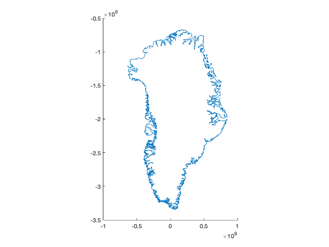
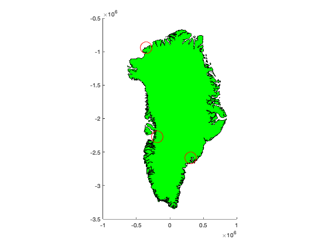
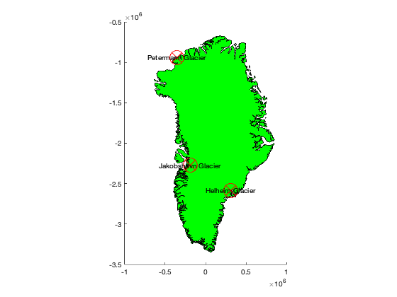
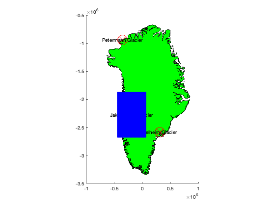
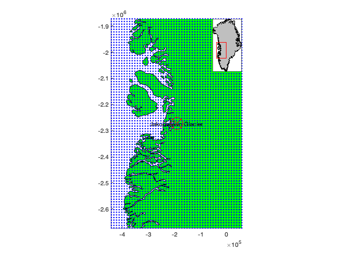
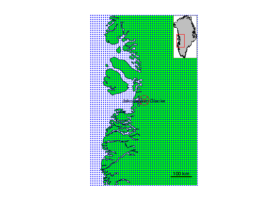
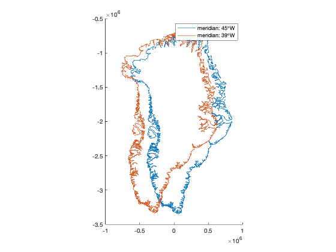
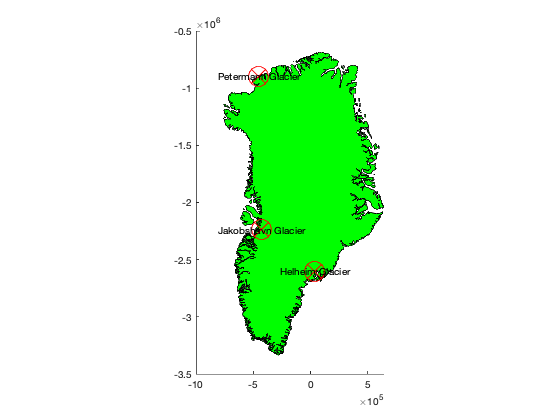
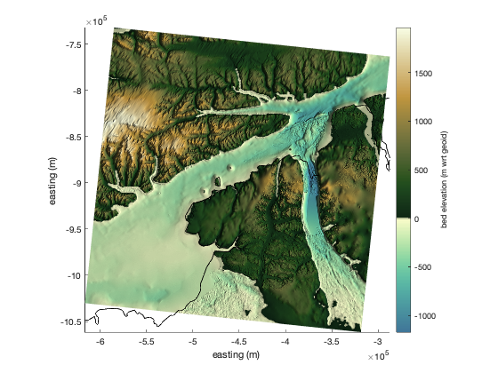
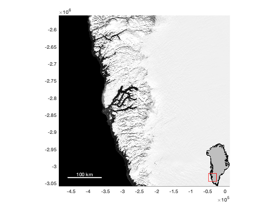

Arctic Mapping Examples
This file shows a few examples of how to use Arctic Mapping Tools for Matlab.
Note: Arctic Mapping Tools is a light version of Antarctic Mapping Tools for Matlab (Greene et al., 2017), tweaked for north polar stereographic coordinates where 70N is the latitude of true scale and the central meridian is 45W. For MUCH better documentation, check out the Examples section of the Antarctic Mapping Tools page.
Contents
Coordinate transformations and other conversions
Get familiar with ll2psn and psn2ll because they'll be useful on the daily. And again, I recommend looking over the Antarctic Mapping Tools Getting Started page, which walks you through how this toolbox is structured.
- ll2psn convert lat,lon coordinates to north polar stereographic meters.
- psn2ll convert north polar stereographic meters to lat,lon coordinates.
- uv2vxvyn convert zonal and meridional components of vectors to north polar stererographic x and y components.
- vxvyn2uv convert north polar stereographic x and y components of vectors to zonal and meridional components.
- freeboard2thickness convert height above sea level to ice thickness assuming hydrostatic equilibrium.
- thickness2freeboard convert ice thickness to height above sea level assuming hydrostatic equilibrium.
Data analysis
These functions are often useful for analyzing geospatial data:
- pathdistpsn calculate distance in north polar stereographic units along a path.
- psnpath generate a path equally-spaced in north polar stereographic units.
- psngrid generate a grid of points equally spaced in north polar stereographic units.
- inpsnquad determine whether points are within a north polar stereographic quadrangle.
Base Maps
Arctic Mapping Tools currently has just a couple of functions for providing spatial context. They are:
- arcticborders outlines land areas as line or patch objects.
- greenland outlines Greenland as a line or patch object.
- modismog MODIS Mosaic of Greenland background image.
Plotting Functions
The following functions are act just like standard Matlab plotting functions, but they accept geographic (lat,lon) units, perform coordinate transformations via ll2psn, and then plot in north polar stereographic units.
- circlepsn plots circles of given radii.
- contourfpsn plots filled contour lines.
- contourpsn plots contour lines.
- patchpsn creates filled patch objects.
- pcolorpsn creates pseudocolor maps.
- plot3psn plots points in 3D space.
- plotpsn plots marker or line data just like Matlab's plot function.
- quiverpsn resamples and plots vectors such as wind or ocean currents.
- scatterpsn plots color-scaled scattered point data.
- surfpsn plots surfaces in 3D space.
- textpsn places text labels on maps.
Other Map Elements
Maps aren't just about base maps with a few things plotted on them. You might also want things like grid lines and graphical reference scales. Here are some of the basics:
- graticulepsn create a lat,lon grid.
- mapzoompsn zoom a map to a location and create inset maps.
- scalebarpsn create a graphical reference scale bar.
- coordpsn click on a map to get coordinates.
- shadem apply relief shading to a DEM, aka hillshade.
Putting it all together
Let's say you want to make a map of Greenland. Well that's easy, just type greenland. Here's how:
greenland
Perhaps you'd prefer the land areas to be filled in as a patch object. And shouldn't Greenland be green?
greenland('patch','facecolor','green')
If you want to place markers at given geographic locations, use plotpsn. Below we'll put big red circles on three glaciers:
lat = [66.3, 80.75 69.167]; lon = [-38.2 -65.75 -49.833]; plotpsn(lat,lon,'ro','markersize',20)
Notice, we fed lat,lon locations to the plotpsn function above, but the x,y axes show units on the order of 10^6. Those units are polar stereographic meters. Calling plotpsn is the same thing as transforming the units yourself with ll2psn, then using the standard Matlab plot function to plot in meters. Here's what I mean: Start by converting lat,lon to meters:
[x,y] = ll2psn(lat,lon)
x =
308219.98 -355751.35 -192176.19
y =
-2584810.40 -938989.65 -2272865.18
And now let's plot the three locations as big red x marks using the standard Matlab plot command:
hold on plot(x,y,'rx','markersize',20)
We can label those three places with textpsn:
places = {'Helheim Glacier','Petermann Glacier','Jakobshavn Glacier'};
textpsn(lat,lon,places)
 Let's say you want a grid of points centered on Jakobshavn Glacier. Make it 500 km wide and 800 km tall, with 10 km resolution:
[latgrid,longrid] = psngrid(69.167,-49.833,[500 800],10);
plotpsn(latgrid,longrid,'b.')
 Let's zoom in on that grid with mapzoompsn, and include the 'n' option to place an inset map in the upper right corner of the map:
mapzoompsn(69.167,-49.833,'mapwidth',[500 800],'ne')
Place a graphical reference scale in the lower right hand corner of the map. And if you don't like the ugly x,y axes on the bottom and left hand side, remove them with axis off.
scalebarpsn('location','se') axis off
Changing the meridian
The standard meridian in the north polar stereographic projecion is 45 degrees W. But someone recently asked me how to plot with the meridian at 39 W. Generally, all the AMT functions will work most reliably using the standard projection, but here's how you can do it if you need. First, a depiction of the difference:
figure greenland greenland('meridian',-39) legend('meridian: 45\circW','meridian: 39\circW')
Following through with more data, we can repeat all the examples from above, but with the meridian at 39 W:
figure % Outline: greenland('meridian',-39) % A green patch: greenland('patch','facecolor','green','meridian',-39) % Three glaciers: lat = [66.3, 80.75 69.167]; lon = [-38.2 -65.75 -49.833]; % Plot the glaciers as red circles: plotpsn(lat,lon,'ro','markersize',20,'meridian',-39) % Instead of using plotpsn, you can convert coordinates yourself: [x,y] = ll2psn(lat,lon,'meridian',-39); % And with the converted coordinates, just use plain plot function: hold on plot(x,y,'rx','markersize',20) % Label the three glaciers: places = {'Helheim Glacier','Petermann Glacier','Jakobshavn Glacier'}; textpsn(lat,lon,places,'meridian',-39)
And if you have the BedMachine functions, you can plot bed elevations like this, doing a 300 km x 300 km grid around Petermann. (Below I'm using a cmocean colormap).
% Load BedMachine data surrounding Petermann Gl: [bed,Lat,Lon] = bedmachine_data('bed',80.75,-65.75,'buffer',150,'geo'); figure pcolorpsn(Lat,Lon,bed,'meridian',-39) % plots bed elev. axis tight % gets rid of white space greenland('k','meridian',-39) % plots black grounding line cb = colorbar; ylabel(cb,'bed elevation (m wrt geoid)') cmocean('topo','pivot') % optional colormap shadem(3) % applies hillshade xlabel 'easting (m') ylabel 'easting (m')
Background image
Sometimes you just want a nice bacground image to plot things atop. I like the MODIS Mosaic of Greenland, which places a grayscale image object (not tied to the current colormap) on the bottom of the stack of whatever objects you're plotting. I especially like the 'contrast','white' option, which is good when you want to overlay semitransparent pcolor data like ice speed or whatnot.
Here we zoom to an area of interest before calling modismog because otherwise the entire dataset gets loaded and plotted.
figure mapzoompsn(64.4,-49.8,'se','frame','off') modismog('contrast','white') scalebarps('color','white')
Citing AMT
If the Arctic Mapping Tools are useful for you, please cite the paper that describes AMT.
Greene, C. A., Gwyther, D. E., & Blankenship, D. D. Antarctic Mapping Tools for Matlab. Computers & Geosciences. 104 (2017) pp.151-157. doi:10.1016/j.cageo.2016.08.003.
Author Info
This page was written by Chad Greene of the University of Texas Institute for Geophysics (UTIG), June 2017. Feel free to contact me if you have any questions.